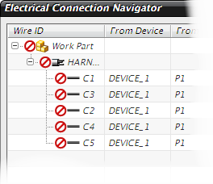

Import your data into the part
-
In the Electrical Component Navigator, right-click and choose Import→Merge.
-
If necessary, set Files of type: to:
Bookmark Files and PLM XML (*.plmxml)
-
Double-click either rte1_logical_2.plmxml or your saved version, ***_logical.plmxml.
The component list is imported into your part file and is now displayed in the Navigator.

The connection list is also added to the Electrical Connection Navigator.

-
Change the navigator’s display format to Full so that the Color column appears.